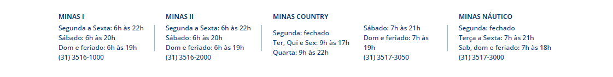

O Sada Cruzeiro é o maior campeão da Superliga Masculina e o Sesc-RJ é quem tem mais títulos na Superliga Feminina, mas nenhum outro time do voleibol brasileiro é tão tradicional quanto o Minas Tênis Clube.
O Minas é o único clube do país a ter disputado todas as edições da Superliga, tanto nas edições femininas quanto masculinas. E como competir não é suficiente para os grandes esportistas, o clube mineiro foi campeão nas duas modalidades.
História do Minas Tênis Clube
O Minas Tênis Clube foi fundado em 15 de novembro de 1935, em Belo Horizonte. Reconhecido pela sua força nos esportes olímpicos, como natação, basquete, tênis e judô, o clube ajudou a construir a história do voleibol no Brasil.
O vôlei é disputado no Minas desde 1937. Em 1940, o clube conquistou seu primeiro Campeonato Mineiro no esporte. Já na década de 1970, as equipes minastenistas passaram a disputar as competições nacionais de voleibol masculino e feminino.
Os jogos de vôlei na Arena Minas Tênis Clube, na tradicional Rua da Bahia, em Belo Horizonte, costumam receber grandes públicos. O ginásio tem capacidade para 4 mil pessoas. Quando é preciso jogar em locais com capacidade maior, o Minas disputa suas partidas no Mineirinho.
Minas Tênis Clube no vôlei feminino
O Minas Tênis Clube não é o time com mais títulos na história do voleibol feminino brasileiro, mas, sem sombra de dúvidas, é um dos mais tradicionais. A equipe de Belo Horizonte disputou todas as edições da Superliga Feminina e conquistou três títulos. O primeiro veio em 2001/2002. Os outros dois foram conquistados em 2018/2019 e 2020/2021.
A equipe feminina do Minas já teve diferentes patrocínios ao longo de sua história, como Lacqua Di Fiori, MRV e Camponesa. Atualmente, a equipe disputa a Superliga como Itambé/Minas.
Minas Tênis Clube no vôlei masculino
Única equipe que disputou todas as edições da Superliga Masculina sem jamais ter mudado de sede, o Minas Tênis Clube é o maior campeão brasileiro de voleibol masculino. Quando consideramos todos os Campeonato Brasileiros de Vôlei, inclusive os que foram disputados antes da criação da Superliga em 1994, o Minas é quem tem mais títulos: 7 ao todo.
Por conta de outros patrocínios, o time masculino de vôlei do Minas já foi também Telemig Celular/Minas e Vivo/Minas, antes de voltar a ser o Fiat/Minas.
